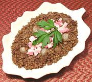

|
Lentils with Tiny OnionsFrance, Provence | ||||
| Serves: Effort: Sched: DoAhead: |
4 side *** 45 min Prep |
A nice accompaniment for a hot dinner. I serve the salt pork as a condiment rather than stirred in. That way guests who wish to avoid the pork or fat can do so. If you reheat, it's best to do so in the oven. | |||
|
10 3 1 6 2 2 ? 2/3 1/4 ---- 6 |
oz oz # c cl oz t T --- oz |
Pearl Onions Carrot Lentils, grn (1) Water Garlic Bay Leaf Olive Oil ExtV Salt Pepper -- Garnish Salt Pork (2) |
Prep - (15 min)
|